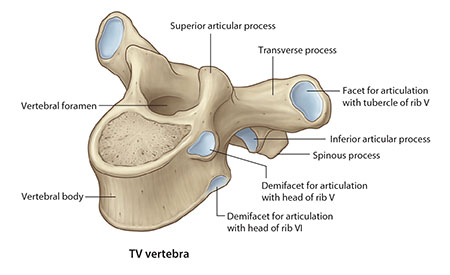
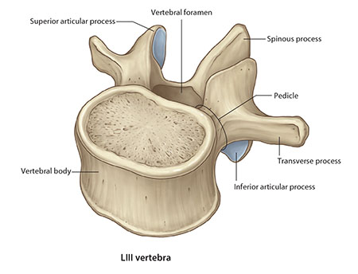
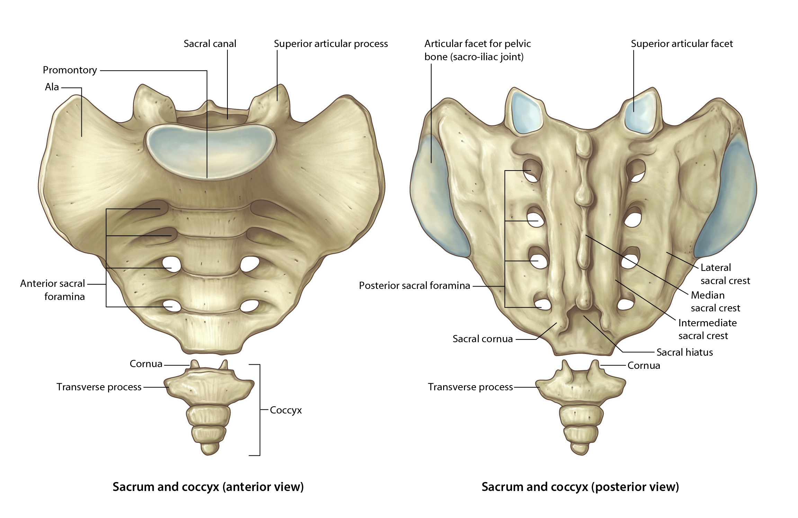
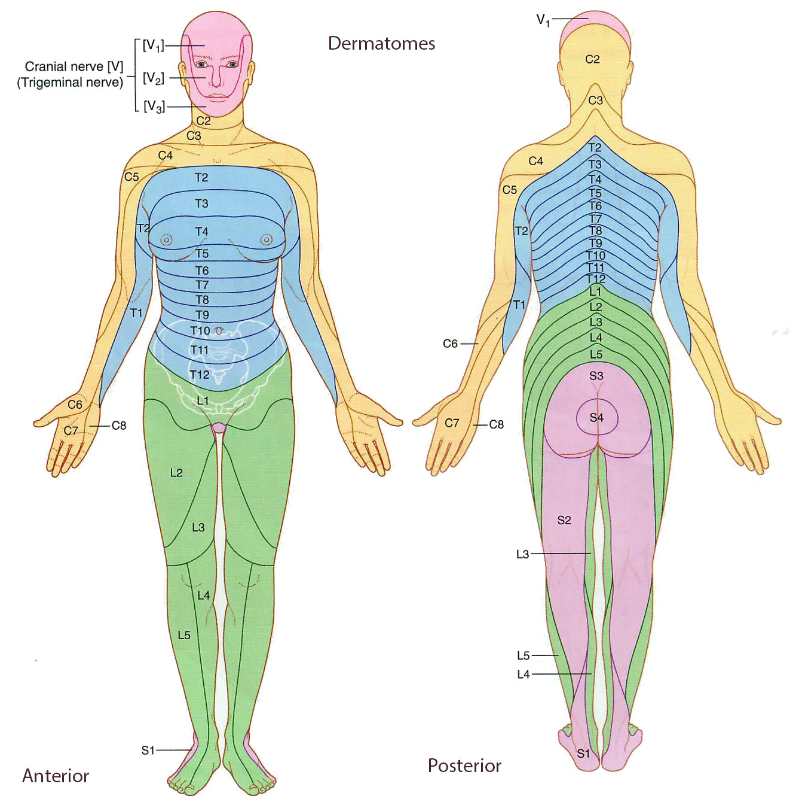

Neurology Lab 2 - Module 1 - Vertebral Column: Page 4 of 5
| View the vertebral column. |
| Using the Highlight tool, identify and highlight the sacrum and coccyx and note the orientation on the transverse, sagittal and coronal cuts. Pay attention to local anatomical relationships. Compare the sacral foramen to those of the lumbar and thoracic foramen. |
|  |  |  |
The sacrum has both anterior and posterior foramen. Which set of foramen have nerves exiting from them? |
|
|
They both have nerves exiting from them, but unlike the cervical, thoracic and lumbar vertebrae, the anterior rami exit from the anterior foramen and the posterior rami exit from the posterior foramen. |
|
Can you speculate as to why the nerves exit from these sets of foramen? |
|
|
This is an embryological phenomenon. The sacral nerves supply the internal pelvis and posterior parts of the thigh, leg and plantar areas of the feet. The anterior medial and lateral parts of the pelvis and leg are supplied by nerves exiting from the lumbar foramen. This is best exemplified by the sensory skin dermatomes of the pelvis and lower extremety.  |
|